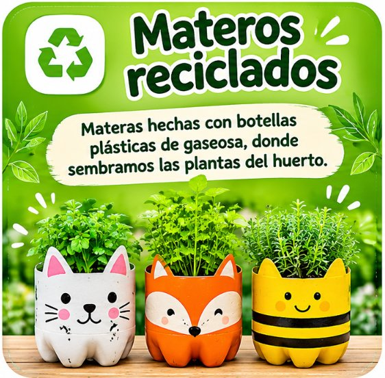
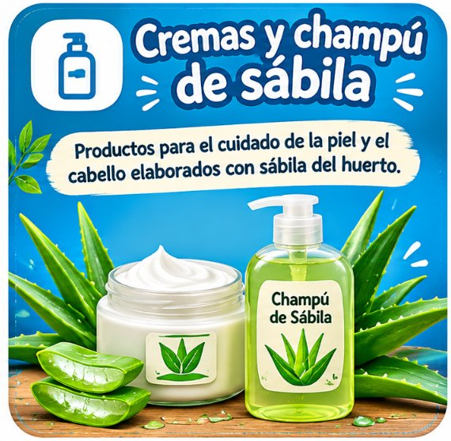

En el desarrollo del proyecto, los estudiantes de la sede Simón Bolívar crearon productos derivados del reciclaje y de las plantas del huerto.
Materas hechas con botellas plásticas de gaseosa, donde sembramos las plantas del huerto.

Velas perfumadas con las esencias de nuestras plantas medicinales.
Productos para el cuidado de la piel y el cabello elaborados con sábila del huerto.

Descarga el documento con los códigos QR de todas las plantas para ubicarlos en el huerto.